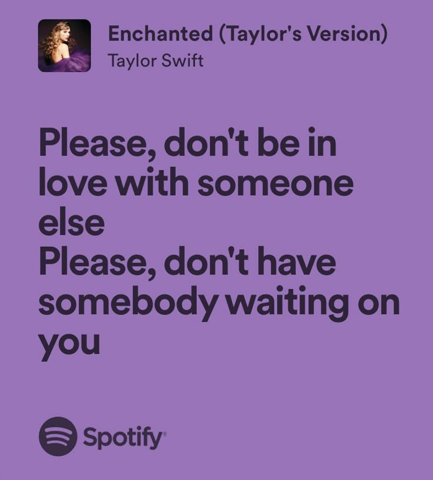
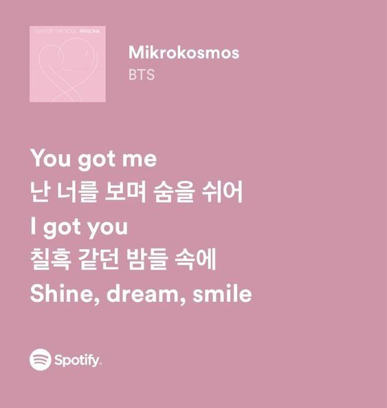
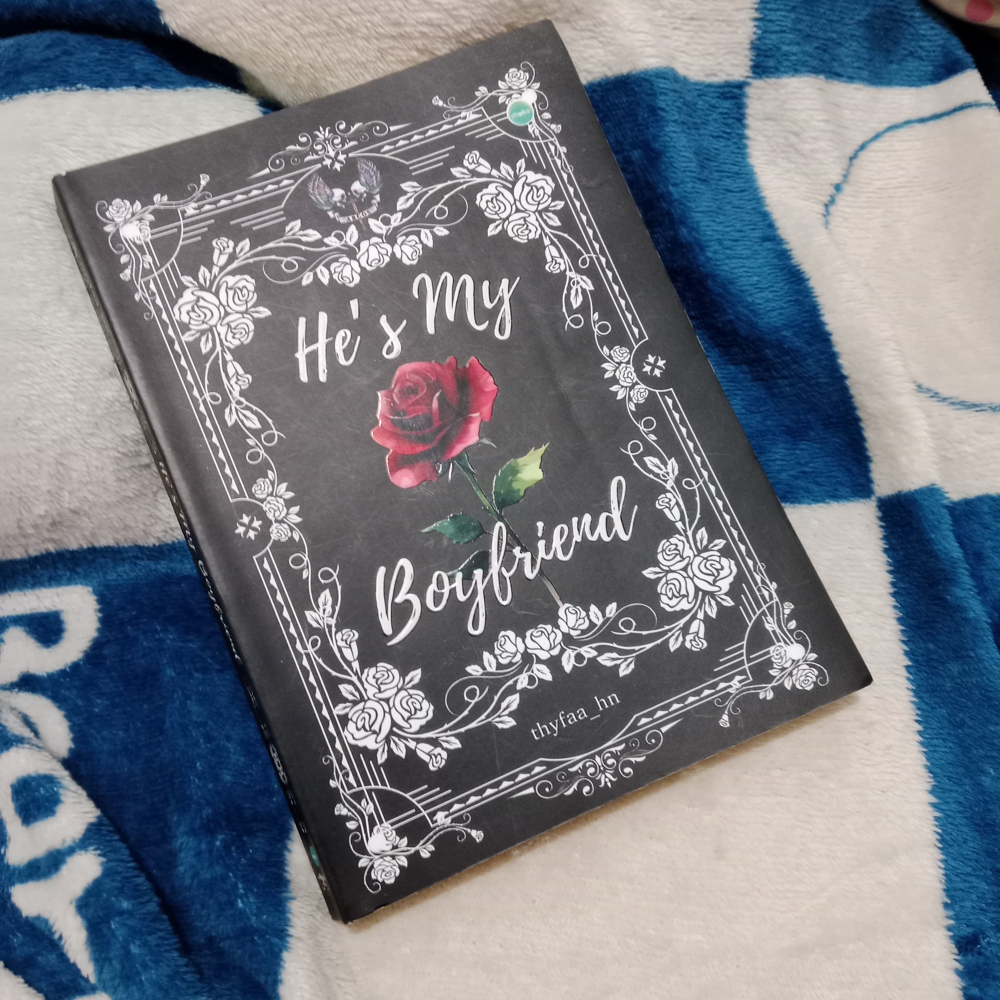
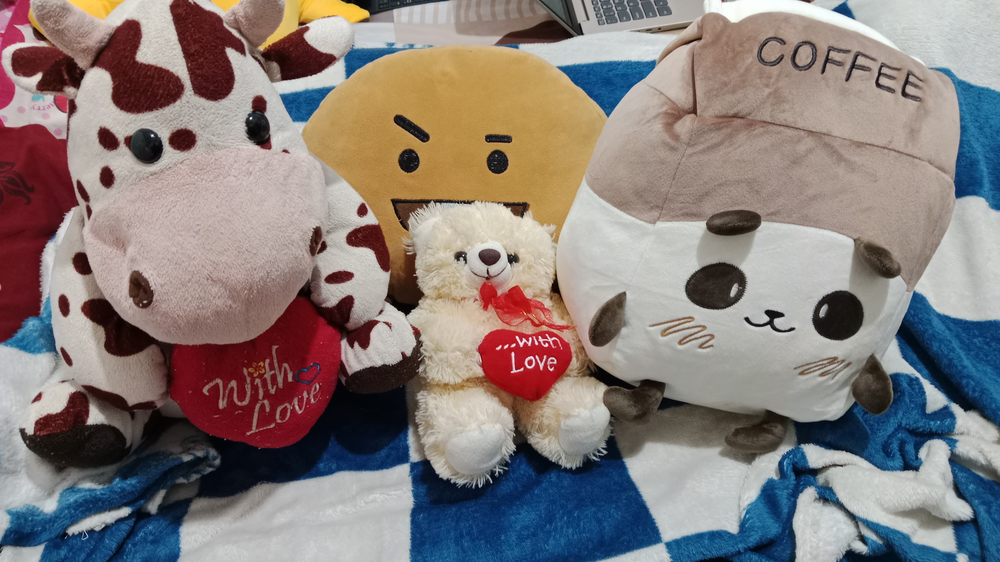

My Favorite Things
1. BTS (Bangtan Sonyeodan)

BTS is a South Korean boy band that I really love. Mereka punya 7 member: RM, Jin, Suga, J-Hope, Jimin, V, dan Jungkook. BTS bukan cuma grup K-pop favorite ku, tetapi juga motivasi yang sering banget ngasih semangat di hari-hari susah. Lagu-lagu mereka bikin aku ngerasa dipahami, mereka juga punya kepribadian hangat dan suka menyebarkan pesan positif lewat musik, terutama saat mereka menyentuh hal-hal emosional dan perjuangan hidup — bikin ngena banget.
Alasan kenapa aku suka BTS:
- 🎧 Lagu mereka sering bikin aku semangat dan tenang.
- 💌 Mereka punya pesan self-love, growth, dan support.
- 🔥 BTS selalu kerja keras dan itu bikin aku terinspirasi.
- 😂 Chemistry antar member-nya lucu dan bikin nyaman nonton mereka.
- 🎶 Aku bisa merasa 'ditemani' lewat musik mereka, terutama pas lagi down.
- 🛤️ BTS ngajarin aku buat tetap jalan, meski pelan.
- 🌈 Member-nya punya kepribadian unik dan saling melengkapi.
- 🤗 Rasanya kayak punya teman yang ngerti walaupun nggak kenal langsung.
2. Lagu - Enchanted by Taylor Swift & Mikrokosmos by BTS
 Aku suka banget dengerin lagu, terutama saat sendiri, ngerjain tugas, atau lagi bad mood. Dua lagu yang paling aku suka saat ini adalah Enchanted dan Mikrokosmos. Lagu Enchanted punya nuansa dreamy dan romantis yang bikin aku hanyut, sedangkan Mikrokosmos bikin aku merasa dihargai dan nggak sendirian.
Alasan kenapa aku suka lagu ini:
- 💫 Lirik keduanya penuh makna mendalam dan ngena di hati.
- 💖 Enchanted romantis, dreamy, dan cocok banget buat suasana tenang.
- 🌌 Mikrokosmos memberi harapan dan semangat, terutama lirik tentang "Setiap orang bersinar dengan caranya sendiri".
- 🎶 Lagu-lagu ini bikin aku merasa 'dipahami' meskipun lagi sendiri.
- 📚 Vibenya pas banget buat nemenin aku saat lagi baca, nulis, atau bengong.
- 🎤 Aku suka banget suara dan emosinya, dan sering repeat terus.
3. Film Moana

Moana adalah film animasi dari Disney yang mengisahkan tentang seorang gadis pemberani yang melawan ketakutan dan pergi mencari jati diri lewat laut lepas, mengikuti panggilan laut untuk menyelamatkan desanya. Cerita ini bukan cuma tentang petualangan, tetapi juga tentang menemukan jati diri dan percaya sama insting sendiri.
Alasan kenapa aku suka film Moana:
- 🌟 Ceritanya inspiring dan penuh semangat.
- 🎵 Lagu-lagunya indah dan melekat banget di hati (kayak How Far I'll go).
- 🛶 Moana ngajarin tentang keberanian dan rasa percaya pada diri sendiri.
- 🔁 Ceritanya bikin susah move on, walaupun udah nonton berkali-kali.
4. He's My Boyfriend - by thyfaa_hn
Novel ini menceritakan tentang Arthur Renaldi Agatha, ketua Argos, yang kembali ke SMA Galaksi dengan identitas baru setelah dua tahun berpisah dari sahabat-sahabatnya. Kepulangannya memicu serangkaian peristiwa menegangkan, termasuk teror dan pembunuhan yang menargetkan para pembully di sekolah. Ditengah situasi tersebut, Arthur berusaha melindungi Athena Carolyn Acacio, sekaligus gadis yang dicintai secara diam-diam. Novel ini mengandung cerita tentang cinta, sahabat, dan pengorbanan. Buku ini juga hadiah ulang tahun dari temenku, jadi makin berarti.
Alasan kenapa aku suka Novel ini:
- 🔍 Cerita yang penuh dengan intrik dan emosi, membuatku terus penasaran di setiap babnya.
- 🧠 Karakter-Karakternya memiliki kedalaman dan perkembangan yang menarik untuk diikuti.
- 💞 Tema persahabatan, cinta, dan pengorbanan yang disajikan dengan cara yang relatable.
- 🎁 Aku punya kenangan spesial karena ini hadiah dari teman.
5. Boneka
Aku suka banget sama boneka - nggak cuma karena lucu, tapi karena mereka selalu bikin aku merasa tenang. Boneka bukan cuma mainan buatku, tapi juga temen kecil yang nemenin aku dari dulu. Sampai sekarang pun aku masih sering tidur sambil meluk boneka karena rasanya lebih nyaman.
Alasan kenapa aku suka Boneka:
- 🕯️ Bikin suasana lebih hangat dan calming.
- 🧸 Punya kenangan spesial dari masa kecil.
- ☁️ Nemenin aku saat sendiri atau stres.
- 💤 Aku nggak bisa tidur tanpa sesuatu buat kupeluk.